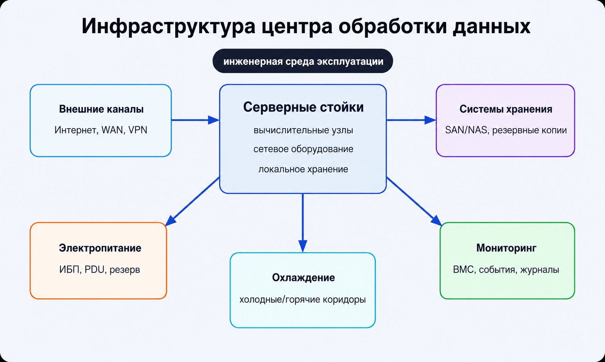

Высокопроизводительные серверы в центрах обработки данных
Центр обработки данных является инженерной средой, в которой серверы размещаются, питаются, охлаждаются, подключаются к сетям и контролируются как единая инфраструктура.

Основные элементы ЦОД
Серверные стойки
Размещают вычислительные узлы, сетевое оборудование и локальные системы хранения.
Питание и ИБП
Обеспечивают непрерывность работы при сбоях электроснабжения.
Охлаждение
Поддерживает допустимый тепловой режим и предотвращает снижение производительности.
Связь
Подключает ЦОД к внешним каналам, корпоративным сетям и облачным сервисам.
Хранение
Обеспечивает централизованное хранение данных и резервное копирование.
Мониторинг
Позволяет контролировать состояние оборудования, событий и инженерных систем.
Облака и виртуализация
На базе высокопроизводительных серверов создаются виртуальные машины, контейнеры, базы данных, образовательные платформы, корпоративные порталы и аналитические сервисы. В таких сценариях важны масштабируемость, изоляция нагрузок и централизованное администрирование.
Группы задач по типу нагрузки
| Тип нагрузки | Примеры | Ключевые требования |
|---|---|---|
| Вычислительная | наука, моделирование, ИИ | CPU/GPU, память, межузловой обмен |
| Транзакционная | банки, БД, корпоративные ИС | IOPS, задержки, отказоустойчивость |
| Инфраструктурная | облака, ЦОД, гос. сервисы | масштабирование, управление, мониторинг |
| Сетевая | телеком, балансировка, API | пропускная способность и низкие задержки |
| Данные и аналитика | Big Data, промышленность, IoT | хранение, потоковая обработка, резервирование |